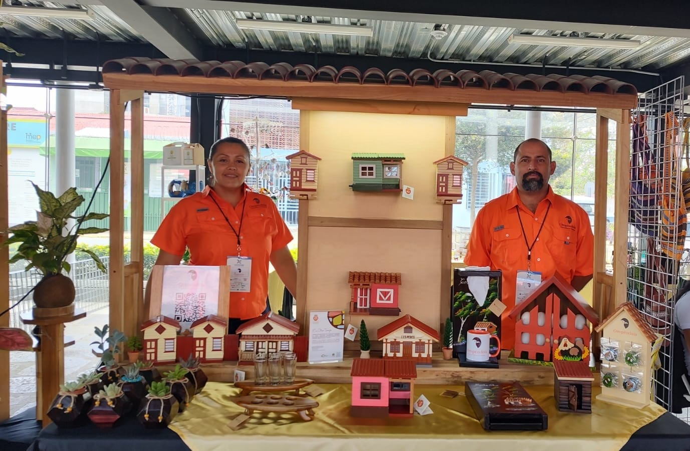

Oropéndola
Arte, Madera y Tradición

"Transformamos la nobleza de la madera en pedazos de historia costarricense. Cada pieza es tallada a mano con la paciencia que dicta la tradición."

Inspirada en la arquitectura de Amando Céspedes, Heredia.

Colores vivos y detalles en madera que cuentan historias de barrio.

La esencia del campo costarricense en una miniatura detallada.
Funcionalidad y arte en maderas preciosas del valle central.
Oropéndola nace en el corazón de Heredia como un tributo a la arquitectura que alguna vez definió nuestras ciudades. Somos una familia de artesanos que cree que la madera tiene memoria.
Nuestra técnica combina el tallado tradicional con una investigación histórica profunda para replicar fachadas patrimoniales, rescatando estilos como el victoriano, el neoclásico y el popular "pachuca".
Cada pieza es única, numerada y firmada, garantizando que usted se lleva un pedazo de alma costarricense a su hogar.
Realizamos envíos a todo el país y pedidos personalizados.
Ulloa, Heredia, Costa Rica
Envíos nacionales por Correos de CR